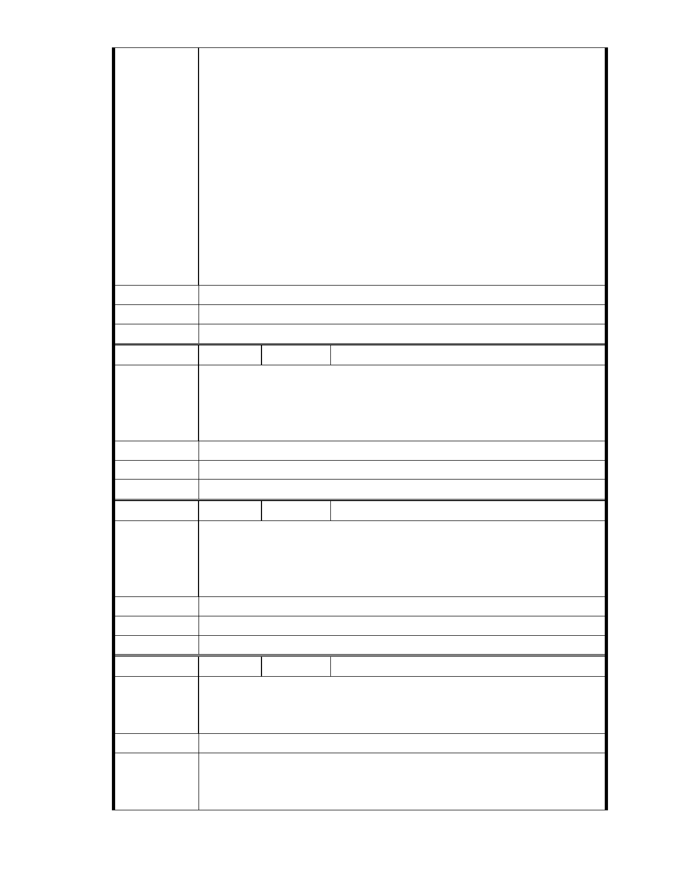

師堅決贊成；最後讓本來也是屬於慈濟園區一部分的東湖連絡道山坡地
被強制徵收；拿去挖山開路。 過去主張挖山開路的人，怎麼可能會保護
慈濟園區？而且，當初他主張挖山開路的時候，他有沒有想過那條路就
是開在「保護區」裡面？ 余律師並非環團隊外主張的過去含慈濟友好，
現在反慈濟的人士。從過去東湖連絡道興建開始，到 2007 年審查等等…
這位余律師向來就站在「反對慈濟不問理由」的陣線上。環團說的那個
謊言，是完全經不起考驗的。 這就是過去的真實的歷史。 所以我們看
清楚歷史之後，我們就會知道，誰才是真正在保護內湖園區的人；而誰
不是。 答案很清楚，真正保護內湖園區的人是「慈濟」。應該要退出內
湖園區的是誰？是這位余律師還有這些外地來的環團人士。 要呼籲放過
內湖園區的對象是這些環團，同時也請他們放過證嚴上人以及所有的慈
濟人。請市政府儘速表現出為政該有的擔當，通過慈濟這個改善方案。
建議辦法
市 府 說 明 相關陳情意見將納入本案審查人民意見，依法定程序辦理。
委 員 會 決 議 同編號 1。
編 號 232 陳情人 陳美美
慈濟內湖園區的改善計畫,解決大家最關心的滯洪排水問題, 還兼顧景觀
陳 情 理 由 美化,慈濟以較現代化的低碳設施繼續在內湖推展其人文、環保教育,讓人
與自然能更和諧.
建議辦法
市 府 說 明 相關陳情意見將納入本案審查人民意見，依法定程序辦理。
委 員 會 決 議 同編號 1。
編 號 233 陳情人 程慧治
慈濟內湖園區現在的狀況是柏油舖面和鐵皮屋，對於市容真感覺還在落
陳 情 理 由 後中.旁邊大樓真的是強烈對比。目前慈濟要幫忙蓋滯洪池，也加強排水
功能那不是很環保.又可以增加市容.不知道未何大家不願意支持
建議辦法
市 府 說 明 相關陳情意見將納入本案審查人民意見，依法定程序辦理。
委 員 會 決 議 同編號 1。
編 號 234 陳情人 陳信安
請問慈濟內湖園區的環評是否還沒通過?還有抗議的人士提出哪些合理
陳 情 理 由 與不合理的疑問?市府目前的動作到哪?有沒有訂立完成期限?
建議辦法
1.目前本案刻正進行台北市都市計畫審議之程序，未來主要計畫須再經
內政部都市計畫委員會審議，且時程並無相關完成期限，應以委員會審
議結果為準。
- 281 -